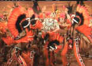
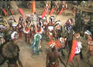

| Annie
Get Your Gun (SE)/A,A- |
| Warner/1950/107/FS
1.33 |
Irving Berlin's brilliant musical gem is polished
and preserved on this Warner DVD release. Annie Get Your Gun is an explosion of music, song,
dance and color. Not seen on TV or theatrical release since 1973 owing to rights questions, movie
lovers are in for a special treat.
Annie Get Your Gun is holstered in a good story. The competition
and romance between sharpshooters Annie and Frank Butler in the arena of Buffalo Bill's Wild West
Show is a charming framework for Berlin's wonderful tunes. The wild Annie's first meeting with
Butler and the ensuing contest sets the stage for these two characters with obvious joy. The
ensuing rise of Annie in the show, the budding romance, the split and the reunion, is all told in
exquisite musical terms. Annie Get Your Gun boasts a full load of musical ammunition with
songs like There's No Business Like Show Business, Doin' What Comes Natur'lly, The
Girl That I Marry, You Can't Get a Man with a Gun, My Defenses are Down, Anything You Can
Do, and I Got the Sun in the Morning. They are uniformly terrific.
 |
 |
| Judy in pastel. ©Warner |
Betty in acrylic. ©Warner |
Betty Hutton fires away with her branded comic
gusto. Hutton's broad portrayal of Annie Oakley is more like a barrage of buckshot than a single
penetrating bullet. Every Annie emotion is bandied about in beautiful Technicolor. Hutton was a
great choice to fill in for Judy Garland after the studio let her go during this fabled troubled
production. Their styles are blatantly different and while you can see what you were missing by not
having Garland play Annie, Hutton's manic effervescence is a great asset to most scenes. Howard
Keel, MGM's great musical leading man, makes his starring debut as Frank Butler. Keel is a towering
presence, physically and musically and can act to boot.. With his sonorous baritone voice, Keel
puts over every song in the Annie Get Your Gun arsenal with dead eye acumen. Keenan Wynn
brings a strident energy to show manager Charlie Davenport, Louis Calhern is a dignified Buffalo
Bill, and J. Carroll Naish stone faced as Chief Sitting Bull. (Incredibly, Naish reprised his role
in the 1954 Sitting Bull.)
Charles Rosher was ®Oscar nominated for the color photography, but it is worth a sidebar that Harry
Stradling was behind the camera for the Judy Garland/Busby Berkeley scenes. The visual difference
in the "I'm a Indian Too" (Included on the outtakes.) number is dramatic. Instead of the
happy, bright, colors of Rosher, Stradling gives paints with a surreal palette, skies awash in a
warm water color mural of orange, yellow and purple. Even the Indians costumes blend with the back
drop and Garland trussed in charming buckskin green stands out, like a young girl playing in before
the mirror of her imagination. Perhaps a different set designer was involved under Berkeley's
direction as well.
George Sidney does a fine job of putting setting the two major montages to music
with quick snippets of the merry-go whirlwind of Annie Oakley's life with the big show. Somewhere behind
the scenes, maybe even over the rainbow, the tasteful influence of MGM master musical producer is
looking over the production. The screenplay by Sidney Sheldon moves like a Gatling gun and the
scoring by Adolph Deutsch and Roger Edens keeps apace.
The Technicolor is a as spectacular as the staging and music. Brilliant
saturation highlights every scene. There are a few minor registration errors, but the transfer
seems to doing some magic all its own. The color pulsing, so endemic to many older three strip
films, is also lassoed in on this transfer. Every once in a while I thought I saw a trace of it,
but something masked it beautifully. Sharpshooters will admire Annie Get Your Gun for its
resolution of detail. Contrast is consistently eye popping. Betty Hutton literally has to be
contained from jumping onto your lap in the home theater. But the blaze of rich color is the
unparalleled prize in this shootin' match. The mono sound is fine and dialogue and songs
cleanly delivered. There was one moment when something Davenport said reverberated, but it was
likely my surround processor playing tricks on me.
The special edition includes outtakes of the two completed numbers starring Judy
Garland, the aforementioned "Indian" and "Doin' What Comes Natur'lly." (These
were on laser disc in That's Entertainment Part III.) There is an especially poignant moment
glimpsed at the end her number when the call of "Action" interrupts her dialogue: Judy
stares ahead with a drugged look in her eyes, sullenly pouting "Hey, you cut before I got my
lines...." Is this the same Judy that just delivered a musical performance filled with energy
and charm? The original opening number Colonel Buffalo Bill directed by Berkeley is also
included with a brief shot of Frank Morgan as Buffalo Bill. Morgan died during the early stages of
production and Calhern replaced him. The remaining out-take is the lovely production number, Let's
Go West Again, sung by Hutton, shot at the behest of Irving Berlin, but eliminated from the
final cut for reasons of pacing. There's a theatrical trailer and a short introduction by
television soap Queen Susan Lucci, breezing through the production history of the show.
|
|

Selections from the feature archive include articles on Akira Kurosawa,
Frank Darabont, Blonde Bimbos, Hollywood
Street Gangs, or Vietnam:
The Hollywood Pariah, and many more....
Sturges Emerges
Preston Sturges was Hollywood's resident comic genius for more than a decade. His movies are
timeless. Click on his image to read all about it.
.jpg)
Screen Voices and style of delivery often stamp an actor's screen
image indelibly. Click the lips to read more.

Take a look at the merry images of America's gift to
the movies: Hollywood Musical Posters are featured from The Movie
Poster Archive.
 
DVDPlanet is the DVD
incarnation of legendary laser retailer Ken Crane's. Deep discounts and serious service.
 Direct from the corridors of the Home Theater Forum, Home
Theater Talk is the newest place on the Net to discuss everything home theater. Friendly atmosphere
and knowledgeable folks are the secret ingredients. Direct from the corridors of the Home Theater Forum, Home
Theater Talk is the newest place on the Net to discuss everything home theater. Friendly atmosphere
and knowledgeable folks are the secret ingredients.
They may be judgmental, but that's the point, isn't
it. Lots of DVD reviews plus news and more.
Click on the link to visit the judge's chambers.
 Brad Lang continues to add more interesting material to the extensive
collection at Classic
Movies. Everything from actors and actress to your favorite directors is
linked at the site. Brad Lang continues to add more interesting material to the extensive
collection at Classic
Movies. Everything from actors and actress to your favorite directors is
linked at the site.

The National Film Preservation Foundation (NFPF) is the nonprofit organization created by the U.S. Congress to save
America's film heritage.

An on-line Home Theater magazine with excellent hardware reviews,
including thorough and responsible research. Check it out.

A self-proclaimed bastion of irreverence place where Joe
Public smacks the heck out of the studio execs that treat us like cattle.
|